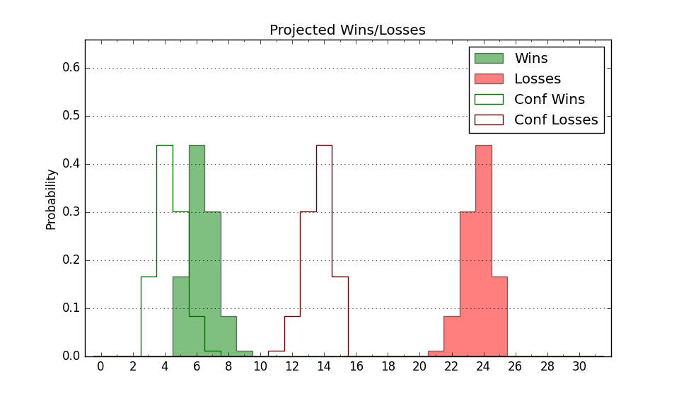

| Home | Game Probabilities | Conferences | Preseason Predictions | Odds Charts | NCAA Tournament |
| City: | Hampton, Virginia | |
| Conference: | Colonial (12th)
| |
| Record: | 3-9 (Conf) 5-19 (Overall) | |
| Ratings: | Comp.: -21.1 (354th) Net: -21.1 (354th) Off: 93.8 (324th) Def: 115.0 (355th) SoR: 0.0 (155th) |
| Remaining | ||||||
|---|---|---|---|---|---|---|
| Date | Opponent | Win Prob | Pred. | |||
| 2/11 | College of Charleston (77) | 7.2% | L 67-86 | |||
| 2/13 | @ Elon (319) | 21.5% | L 68-77 | |||
| 2/16 | @ Hofstra (94) | 2.9% | L 62-86 | |||
| 2/18 | Drexel (188) | 20.7% | L 63-72 | |||
| 2/23 | Monmouth (353) | 64.5% | W 73-68 | |||
| 2/25 | @ North Carolina A&T (291) | 16.2% | L 70-82 | |||
| Previous | Game Score | |||||
| Date | Opponent | Win Prob | Result | Off | Def | Net |
| 11/9 | @James Madison (84) | 2.5% | L 58-106 | -8.6 | -17.7 | -26.3 |
| 11/16 | @East Carolina (227) | 10.1% | L 73-82 | 2.3 | 7.4 | 9.7 |
| 11/21 | @UC Santa Barbara (90) | 2.7% | L 66-79 | 5.4 | 1.7 | 7.1 |
| 11/22 | (N) North Alabama (272) | 23.3% | L 74-75 | -1.8 | 15.3 | 13.6 |
| 11/26 | @Wake Forest (73) | 2.1% | L 70-97 | 7.5 | -2.5 | 5.1 |
| 11/30 | @Georgia (135) | 5.0% | L 54-73 | -5.7 | 7.5 | 1.8 |
| 12/3 | Howard (235) | 30.3% | W 74-65 | 2.6 | 14.2 | 16.9 |
| 12/7 | Loyola MD (337) | 54.7% | W 66-61 | -5.3 | 11.4 | 6.1 |
| 12/11 | Bowling Green (267) | 35.2% | L 72-86 | -9.6 | -3.2 | -12.7 |
| 12/17 | (N) Norfolk St. (178) | 11.5% | L 66-78 | -9.0 | 8.9 | -0.1 |
| 12/18 | (N) Texas Southern (311) | 31.8% | L 77-82 | 9.4 | -16.3 | -6.9 |
| 12/29 | @College of Charleston (77) | 2.2% | L 61-89 | -3.2 | 6.7 | 3.5 |
| 12/31 | @UNC Wilmington (154) | 5.5% | L 65-82 | 9.9 | -8.6 | 1.4 |
| 1/5 | Hofstra (94) | 9.2% | L 51-67 | -18.1 | 12.3 | -5.8 |
| 1/7 | Northeastern (294) | 40.3% | L 63-79 | -14.0 | -14.3 | -28.3 |
| 1/11 | @William & Mary (315) | 20.8% | L 65-81 | 3.1 | -17.2 | -14.1 |
| 1/16 | North Carolina A&T (291) | 39.6% | L 67-79 | -7.3 | -4.9 | -12.2 |
| 1/19 | @Drexel (188) | 7.1% | L 73-79 | 22.3 | -13.2 | 9.1 |
| 1/21 | @Monmouth (353) | 34.8% | W 83-66 | 20.4 | 9.4 | 29.8 |
| 1/26 | Delaware (229) | 28.1% | W 67-66 | 10.9 | 6.0 | 16.9 |
| 1/28 | Stony Brook (330) | 52.6% | L 66-71 | -10.0 | -5.3 | -15.3 |
| 2/2 | William & Mary (315) | 47.2% | W 62-57 | -15.4 | 13.5 | -1.9 |
| 2/4 | Norfolk St. (178) | 19.3% | L 71-83 | 2.2 | -3.6 | -1.5 |
| 2/8 | @Towson (149) | 5.4% | L 72-86 | 13.7 | -5.2 | 8.5 |
| Stats & Trends | |||||
|---|---|---|---|---|---|
| Current | Day | Week | Month | Season | |
| Composite | -21.1 | +0.0 | +0.2 | +0.2 | -5.5 |
| Comp Rank | 354 | -- | -- | -2 | -16 |
| Net Efficiency | -21.1 | +0.0 | +0.2 | +1.0 | -- |
| Net Rank | 354 | -- | -1 | -2 | -- |
| Off Efficiency | 93.8 | +0.0 | +0.6 | +2.1 | -- |
| Off Rank | 324 | -- | +4 | +10 | -- |
| Def Efficiency | 115.0 | -0.0 | -0.4 | -1.1 | -- |
| Def Rank | 355 | -- | -1 | -5 | -- |
| SoS Rank | 272 | -- | +9 | -92 | -- |
| Exp. Wins | 6.3 | -0.0 | -0.2 | +0.5 | -2.2 |
| Exp. Conf Wins | 4.3 | -0.0 | -0.1 | +0.6 | -1.1 |
| Conf Champ Prob | 0.0 | -- | -- | -- | -0.3 |

| Advanced Stats | ||
|---|---|---|
| Stat | Value | Rank |
| Off Eff FG % | 0.439 | 354 |
| Off Ast Ratio | 0.114 | 345 |
| Off ORB% | 0.235 | 277 |
| Off TO Rate | 0.140 | 58 |
| Off FT Ratio | 0.355 | 77 |
| Def Eff FG % | 0.554 | 338 |
| Def Ast Ratio | 0.173 | 345 |
| Def ORB% | 0.301 | 285 |
| Def TO Rate | 0.132 | 329 |
| Def FT Ratio | 0.367 | 299 |